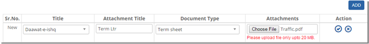
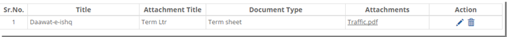


	<section>
		<article>
			<h2>Attachment<span></span></h2>
			<div>
				<p></p>
				<p>Click on Attachment Tab.</p>

				<p>New page appears with Add button at right side corner of the Page.</p>

				<p>Click on "Add" button. A new row appears with empty Data.</p>

				<div class="triangle-border top">				
					
				</div>

				<p>Sr. No will be New.</p>

				<p>Select Title for which you want to add attachment for.</p>

				<p>Enter Attachment Title.</p>

				<p>Select "Document Type:" These comes from Document Type master.</p>

				<p>Browse "Attachments:" Choose file window appears. User can choose the necessary file for attachment.</p>

				<p>Click On "Save" button to save the record.</p>

				<p>After saving, the page will look like this.</p>

				<div class="triangle-border top">				
					
				</div>

				<p>Click <b>Pencil Icon</b> to modify the record or Click on <b>Trash Icon</b> to Remove the record.</p>

				<p>User can download the attachment by clicking on hyper link appears at Attachment column.</p>

			</div>
		</article>
	</section>